Introducere
Listele cu marcatori și numerotate pot fi utilizate în documentele dvs. pentru a contura, aranja și sublinia textul. În această lecție, veți învăța cum să modificați marcatoarele existente, să inserați liste noi cu marcatori și numerotate, să selectați simboluri ca marcatoare și să formatați listele cu mai multe niveluri.
Pentru a crea o listă cu marcatori:- Selectați textul pe care doriți să îl formatați ca listă.
- În fila Acasă, faceți clic pe săgeata drop-down de lângă comanda Bullets. Va apărea un meniu cu stiluri de marcatori.
- Deplasați mouse-ul peste diferitele stiluri de marcatori. O previzualizare live a stilului marcator va apărea în document. Selectați stilul marcator pe care doriți să îl utilizați.
- Textul va fi formatat ca o listă cu marcatori.


Când trebuie să organizați textul într-o listă numerotată, Word oferă mai multe opțiuni de numerotare. Puteți formata lista cu cifre, litere sau cifre romane.
- Selectați textul pe care doriți să îl formatați ca listă.
- În fila Acasă, faceți clic pe săgeata derulantă de lângă comanda Numerotare. Va apărea un meniu cu stiluri de numerotare.
- Deplasați mouse-ul peste diferitele stiluri de numerotare. O previzualizare live a stilului de numerotare va apărea în document. Selectați stilul de numerotare pe care doriți să îl utilizați.
- Textul va fi format ca o listă numerotată.

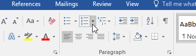


Dacă doriți să reporniți numerotarea unei liste, Word are o opțiune Restart at 1 . Poate fi aplicat listelor numerice și alfabetice .
- Faceți clic dreapta pe elementul din listă pentru care doriți să reporniți numerotarea, apoi selectați Reporniți la 1 din meniul care apare.
- Numerotarea listei va reporni.
- De asemenea, puteți seta o listă pentru a continua numerotarea din lista anterioară. Pentru a face acest lucru, faceți clic dreapta și selectați Continuare numerotarea .
.png)
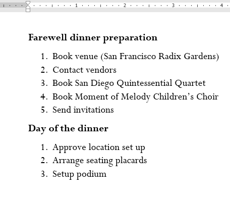

Personalizarea aspectului marcanților din lista dvs. vă poate ajuta să subliniați anumite elemente din listă și să personalizați designul listei dvs. Word vă permite să formatați marcatori într-o varietate de moduri. Puteți folosi simboluri și culori diferite sau chiar puteți încărca o imagine ca marcator.
Pentru a utiliza un simbol ca marcator:- Selectați o listă existentă pe care doriți să o formatați.
- În fila Acasă, faceți click pe săgeata drop-down de lângă comanda Bullets. Selectați Define New Bullet din meniul drop-down.
- Va apărea caseta de dialog Define New Bullet . Faceți clic pe butonul Simbol .
- Va apărea caseta de dialog Simbol .
- Faceți clic pe caseta derulantă Font și selectați un font. Fonturile Wingdings și Symbol sunt alegeri bune, deoarece au multe simboluri utile.
- Selectați simbolul dorit, apoi faceți clic pe OK .
- Simbolul va apărea în secțiunea Previzualizare a casetei de dialog Definire marcator nou. Faceți clic pe OK .
- Simbolul va apărea în listă.
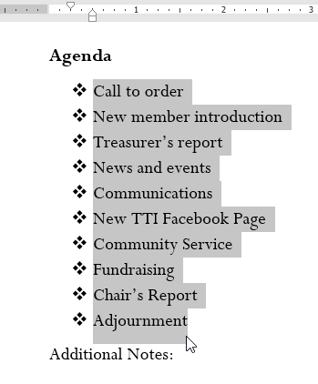
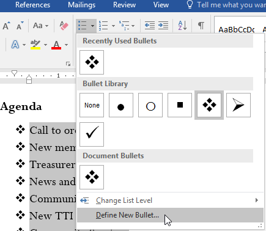

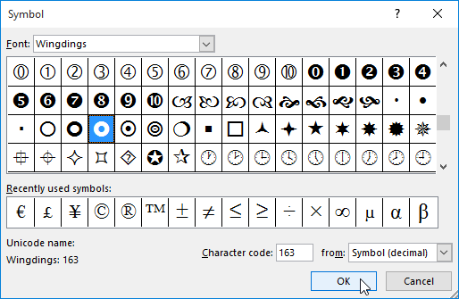
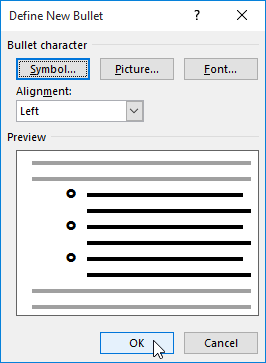

- Selectați o listă existentă pe care doriți să o formatați.
- În fila Acasă, faceți clic pe săgeata drop-down de lângă comanda Bullets. Selectați Define New Bullet din meniul drop-down.
- Va apărea caseta de dialog Define New Bullet. Faceți clic pe butonul Font.
- Va apărea caseta de dialog Font. Faceți clic pe caseta drop-down Culoare font. Va apărea un meniu cu culori de font.
- Selectați culoarea dorită, apoi faceți clic pe OK.
- Culoarea marcatorului va apărea în secțiunea Previzualizare a casetei de dialog Definire marcator nou. Faceți clic pe OK.
- Culoarea marcatorului se va schimba în listă.


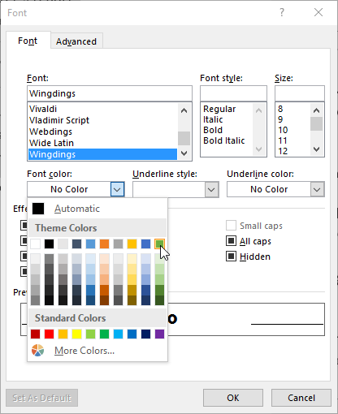

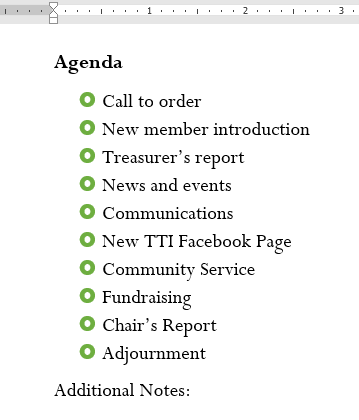
Listele cu mai multe niveluri vă permit să creați un contur cu mai multe niveluri. Orice listă cu marcatori sau numerotate poate fi transformată într-o listă pe mai multe niveluri folosind tasta Tab.
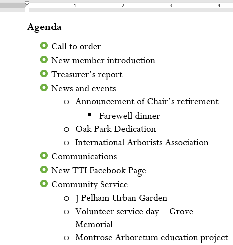
Pentru a crea o listă pe mai multe niveluri:- Plasați punctul de inserare la începutul liniei pe care doriți să o mutați.
- Apăsați tasta Tab pentru a crește nivelul de indentare al liniei. Linia se va deplasa spre dreapta.
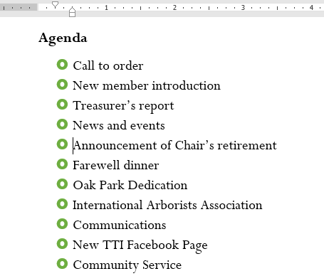
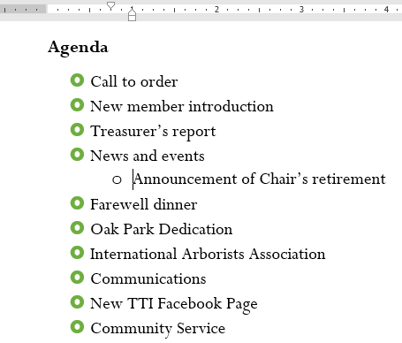
- Pentru a mări indentarea cu mai mult de un nivel, plasați punctul de inserare la începutul liniei, apoi apăsați tasta Tab până când se ajunge la nivelul dorit.
- Pentru a reduce nivelul indentării, plasați punctul de inserare la începutul liniei, apoi țineți apăsată tasta Shift și apăsați tasta Tab.
- De asemenea, puteți crește sau micșora nivelurile de text prin plasarea punctului de inserare oriunde în linie și făcând clic pe comenzile Creștere indentare sau Scădere indentare.
- Când formatați o listă cu mai multe niveluri, Word va folosi stilul marcator implicit. Pentru a schimba stilul unei liste cu mai multe niveluri, selectați lista, apoi faceți clic pe comanda Listă mai multe niveluri din fila Acasă.


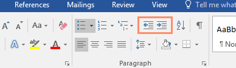
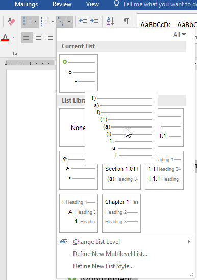